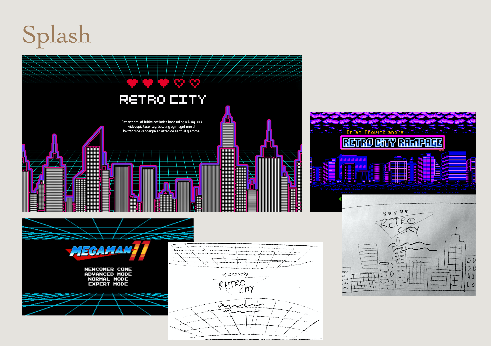
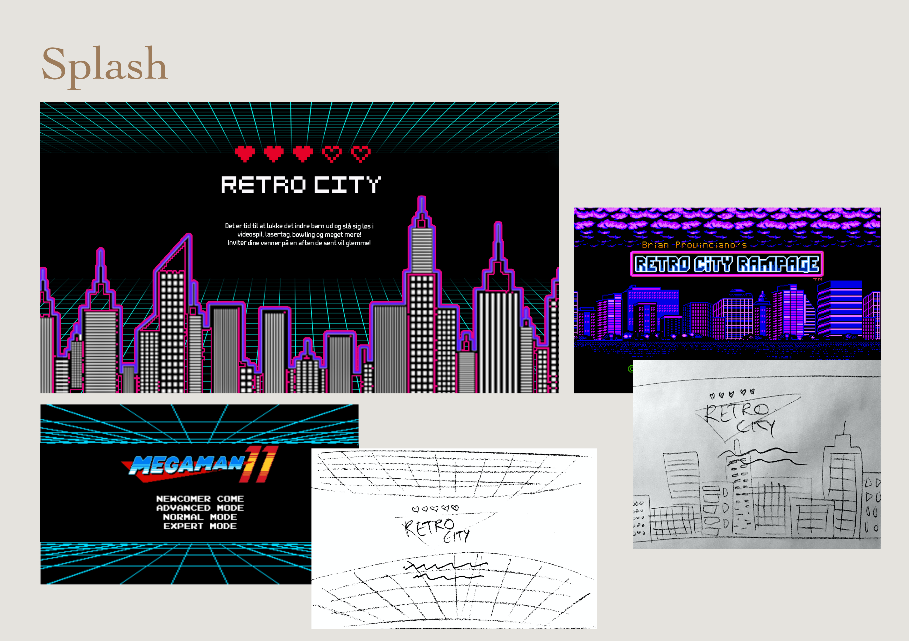

Projekt
01
Grundlæggende web
I dette projekt blev vi introduceret til grundlæggende principper inden for design og programmering af digitale løsninger, herunder strukturering og opbygning af brugergrænsefladen.
Vi fik til opgave, at udarbejde et website om et emne efter eget valg. Vi havde gruppevis fået uddelt forskellige stilarter, som vi indledningsvis lavede research på.
Jeg blev tildelt stilarten ‘Retro Video Game Design’ og valgte derfor, at lave en hjemmeside for bowling og arcadespil, sådan at stilart og emne hang sammen.
Jeg udarbejdede både et moodboard til den tildelte stilart, samt et mockup af mit website i Adobe XD.
Efterfølgende blev websitet kodet i HTML og CSS ud fra en given wireframe og layoutdiagram. Websitet skulle som krav være responsivt og det er derfor optimeret både til mobil og desktop version.
Til websitet udarbejdede jeg også forskellige skitser og ideer til et splash-billede, hvor jeg efterfølgende fandt tutorials på nettet, for at kunne opnå det ønskede resultat i Adobe Photoshop.
Sidst men ikke mindst prøvede vi kræfter med, at lave et favikon til vores website. Dette blev også udarbejdet i Adobe XD.
Se website 
